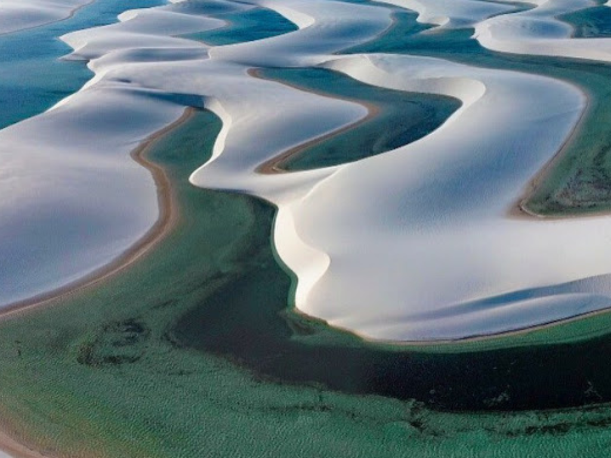

Maranhão é um estado localizado na região Nordeste do Brasil, reconhecido por sua rica herança cultural, diversidade natural e importantes tradições históricas. Sua capital, São Luís, é famosa pelo centro histórico colonial, considerado Patrimônio Mundial pela UNESCO, além das fortes influências culturais africanas, indígenas e portuguesas presentes na música, na culinária e nas festas populares. O Maranhão também abriga paisagens naturais únicas, como os Lençóis Maranhenses, um dos destinos turísticos mais impressionantes do país. A economia maranhense é baseada na agricultura, pecuária, indústria, extrativismo e no crescimento do turismo, destacando o estado como um importante polo cultural e ambiental do Nordeste brasileiro.

Voltar